./ Stack Tecnológico
Base técnica
lenguajes & sistemasInfraestructura & Deploy
contenedores · versionado · hostingRed Team
ofensivosimulado
Blue Team
defensivo · sysadminIA & Automatización
ai engineeringLearning

./ Quién soy
Analista en ciberseguridad con enfoque en operaciones de Red Team y defensa de infraestructuras críticas. Combino auditoría técnica rigurosa con automatización mediante n8n, IA generativa y Python para blindar activos digitales.
Certificado por Cisco (Hacker Ético) y Google (Cybersecurity), construyo y administro home labs ofensivos / defensivos sobre Kali, Parrot, Ubuntu y Mint con Metasploit, reconocimiento inalámbrico y flujos integrados con Claude MCP y Gemini CLI para respuesta automatizada a incidentes.
./ Laboratorio y Proyectos
Auditoría Wireless · Alfa AWUS036ACS
Reconocimiento de espectro 2.4/5 GHz en modo monitor con hardware especializado. Captura y
análisis de handshakes WPA2 con aircrack-ng y
almacenamiento
estructurado en KALI_AUDIT.
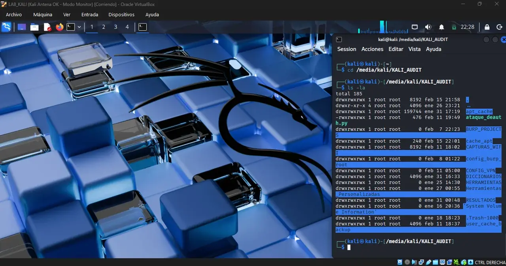
OpSec · Infraestructura VPN Anónima
Túneles cifrados WireGuard (UDP) con Proton VPN, verificados con controles locales de fugas DNS/IP. Kill Switch activo y latencia observada en pruebas de laboratorio.
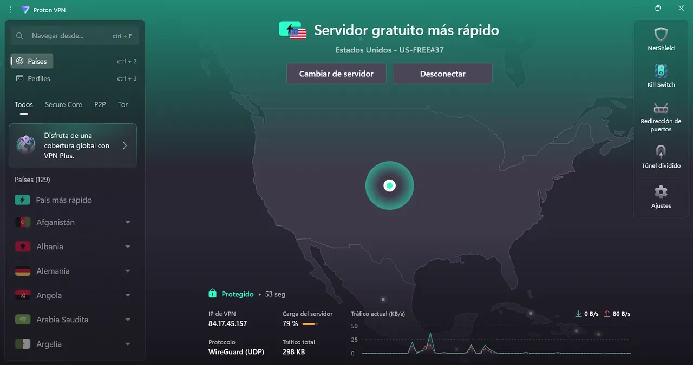
n8n Security Node
Desarrollo de un servidor MCP para conectar Claude Desktop con n8n. Permite interactuar con workflows de automatización y tareas de seguridad mediante lenguaje natural.
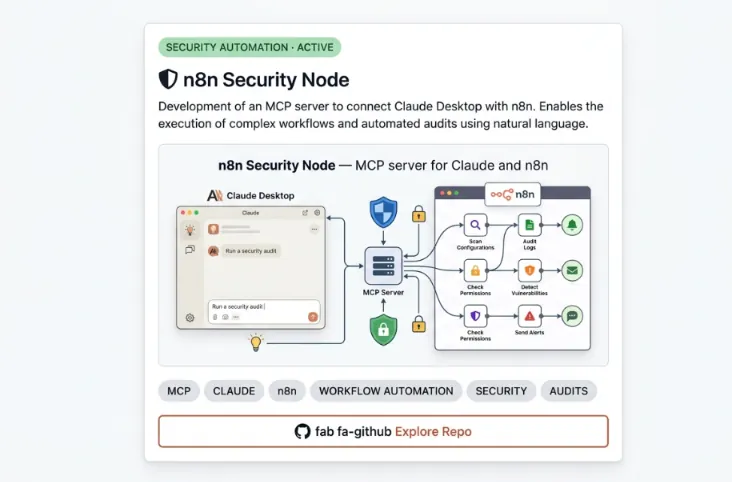
SIEM v4.0 | Threat Intel
Monitoreo en vivo cada 10s sobre Security + System: detecta 9 Event IDs críticos con scoring CVSS v3.1 y alerta a Telegram con rate-limit anti-spam. Validado en producción local en modo solo-lectura.
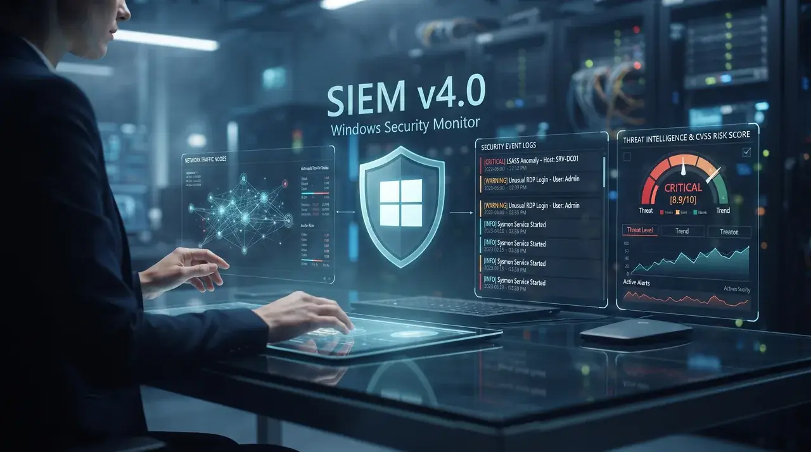
Sentinel V7 Apex
Mantenimiento y auditoría Windows en ~11s: 1.486 archivos analizados, 658 eliminados (52MB liberados), firewall activo en 3 perfiles, 0 críticos en Event Viewer en 24h y 0 conexiones TCP sospechosas. Todo con log de evidencia.
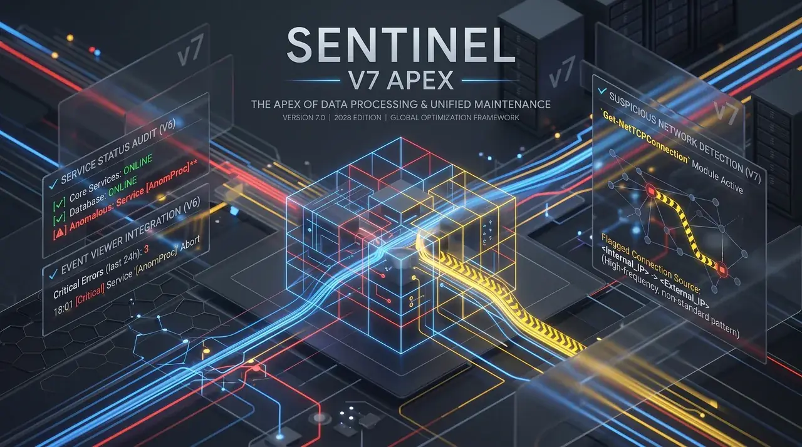
Gophish Lab
Laboratorio controlado de simulación de campañas de phishing para estudiar vectores de ingeniería social, concientización de usuarios, métricas y respuesta defensiva. Proyecto desarrollado exclusivamente con fines educativos y de laboratorio autorizado.
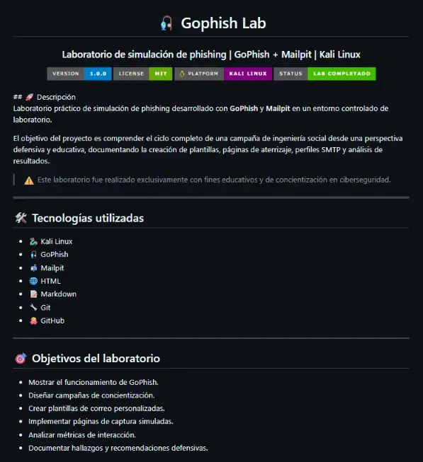
Network Egress Monitor
Monitor orientado a detectar y analizar conexiones salientes de red, proporcionando visibilidad sobre tráfico egress y posibles comportamientos anómalos. Diseñado como herramienta defensiva para mejorar la supervisión de endpoints y redes.
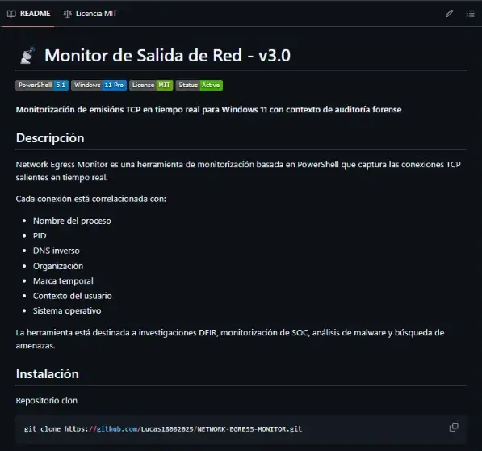
Secure Web Platform
Plataforma web orientada a seguridad que combina desarrollo full-stack, análisis automatizado y arquitectura defensiva. Implementada con Next.js, TypeScript y Cloudflare Workers para construir una superficie web moderna y segura.
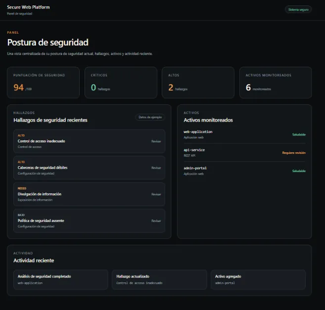
ZenHub Dashboard
Dashboard web orientado a la visualización y gestión de información de proyectos. Proyecto enfocado en interfaces modernas, organización de datos y desarrollo de herramientas web con una arquitectura preparada para evolucionar.
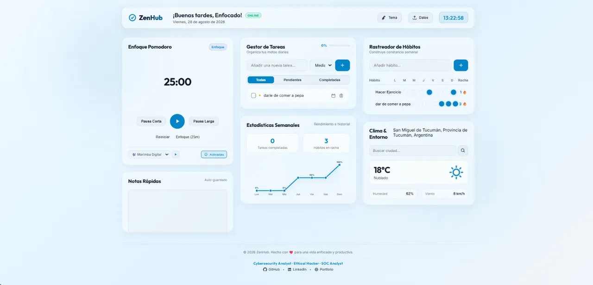
./ Servicios Profesionales
Auditoría & Hardening
Endurecimiento de sistemas operativos y análisis de configuraciones para minimizar superficie de ataque y elevar la resiliencia ante amenazas reales.
Pentesting · Red Team
Simulación controlada de ciberataques para identificar vulnerabilidades explotables antes que los adversarios. Reportes técnicos con evidencia y remediación.
Concientización & Phishing Simulation
Campañas controladas de simulación de phishing para medir exposición real del personal y capacitar en detección de ingeniería social, con métricas de clics y reportes accionables.
./ Investigación
Pensar como atacante para aprender a defender
La mentalidad ofensiva no es solo encontrar vulnerabilidades: es comprender cómo piensa un atacante y usar ese conocimiento dentro de un marco ético y controlado.
La curiosidad como herramienta de ciberseguridad
Cada vulnerabilidad, error de configuración y laboratorio es una oportunidad de aprendizaje. Así documento mi formación práctica.
El aislamiento en máquinas virtuales
Aislar una VM exige entender red, almacenamiento, portapapeles y cada vector de contacto con el host. Principios de laboratorio seguro.
./ Certificaciones
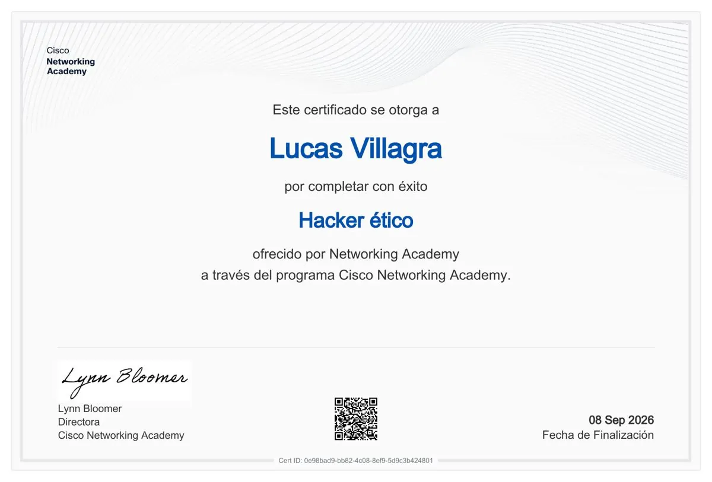
Hacker Ético
Metodología de hacking ético, detección de vulnerabilidades y defensa digital.
VER CREDENCIAL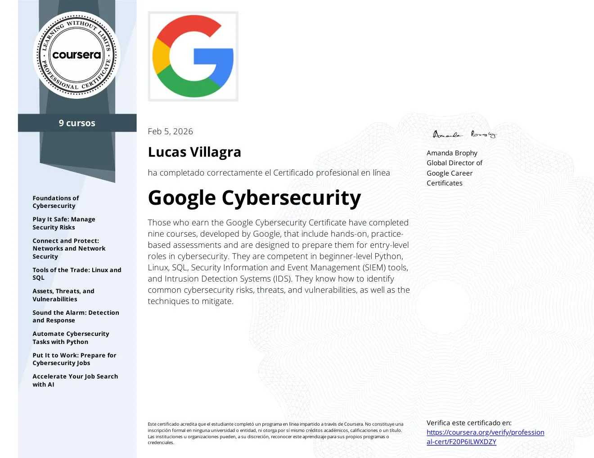
Google Cybersecurity
Python · Linux · SQL · SIEM (Chronicle/Splunk) · IDS (Suricata) · Threat analysis · Incident response.
VER CREDENCIAL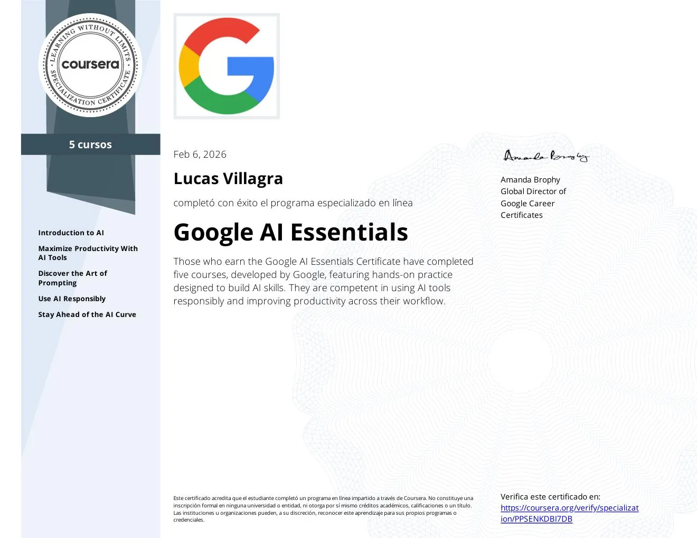
Google AI Essentials
AI Tools · Prompt Engineering · Uso responsable de IA · Productividad aumentada con Generative AI.
VER CREDENCIAL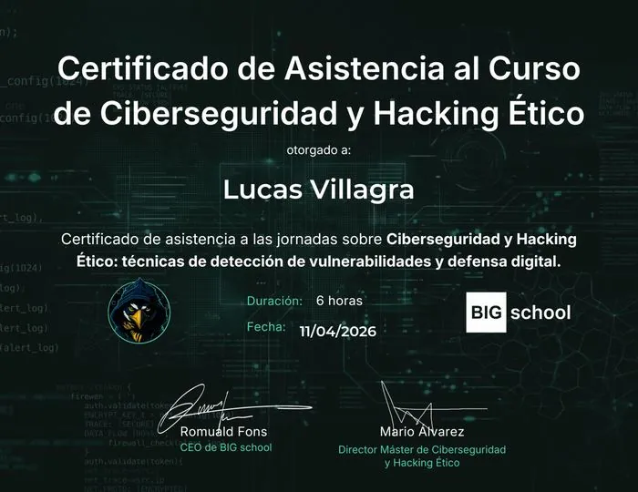
Ciberseguridad y Hacking Ético
Técnicas de detección de vulnerabilidades y defensa digital.
VER CREDENCIAL./ Reflexiones y Principios
" Pensar como atacante te enseña a defender… pero actuar con ética define quién sos. "
" En el mundo de la ciberseguridad, la curiosidad es tu mejor herramienta. Cada vulnerabilidad es una oportunidad para aprender y cada ataque es una lección para mejorar. Mantente siempre un paso adelante, porque en este juego, el conocimiento es poder. "
" El aislamiento de una VM no es absoluto, es probabilístico. La seguridad real viene de entender cada vector de contacto entre la VM y el host, y eliminar los que no necesitás activamente. "